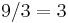

Cálculo mental
 De: La Frikipedia, la enciclopedia extremadamente seria.
De: La Frikipedia, la enciclopedia extremadamente seria.
Hablamos de cálculo mental a esos problemas matemáticos que a simple vista son muy simples (valga la redundancia), pero son muy complejos. Como...
Juan hace 4 problemas de matemáticas en una hora. ¿Cuantos problemas hace en 45 minutos?
Veamos, uno normalmente haría .
¡Pero estais muy equivocados! Fijaos en todos vuestros errores:
- Según estos cálculos, Juan tarda los mismos minutos (contando segundos y décimas) en hacer cada ejercicio, independientemente de cuales sean.
- Si nos basamos en eso, estamos diciendo que Juan tiene una precisión de cojones. Eso significa que Juan es un robot.
- Si Juan es un robot no entiendo que hace haciendo problemas, en vez de trabajar en una mina, y así hacer que mueran menos mineros. Pero no, Juan prefiere hacer problemas matemáticos a salvar vidas.
¿Veis lo estúpido que resulta?
Grandes clásicos de problemas mal resueltos
Repartiendo manzanas
Enriqueta tiene 9 manzanas, y quiere dárselas todas a sus 3 amigas. ¿Cuanto le tocará a cada amiga
si las reparte a partes iguales?
Veamos... . No hay más misterio... ¿O quizás sí?
- ¿Por qué narices quiere repartirlas a partes iguales? ¿Acaso se lleva igual de bien con sus amigas? Normalmente habrá una que te caiga mejor y viceversa...
- ¿Por qué diablos no se queda con ninguna? ¿Acaso tiene el síndrome del altruismo profundo?
- ¿De donde ha sacado las manzanas? Quizás las ha robado, y por eso quiere deshacerse de ellas...
- Claro, la conclusión final es que Enriqueta es una ladrona, y quiere inculpar a sus "amigas".
- Aunque no serán muy amigas si les va a hacer cargar con el crimen...
- Pero tendrá que darse a la fuga, porque sus "amigas" podrían demandarla.
- Así que no se que hace intentando hacer problemas matemáticos para repartir las manzanas a partes iguales si lo que quiere es que cargen con la culpa de un robo...
Madre de Dios, ahora vemos lo innecesario que es este problema, que en el fondo sólo nos da eso, problemas.
El problemita de las cuerdas...
Godofredo tiene una cuerda de 50 metros. Si le quita 6 metros, y luego le quita 8, ¿con cuantos
metros se queda la cuerda?
Venga, un poquito de lógica... . Quizás te parece fácil, pero...
- ¿Qué demonios hace ese tipo con una cuerda de 50 metros?
- ¿Qué mierdas nos importa que quiera quitarle 14 metros?
- ¿Por qué narices tenemos que hacer los cálculos de un desconocido sobre algo completamente trivial?
- ¿Para qué quiere la cuerda? ¿Para ahorcar a alguien?
- Quizás quiere matar a alguien. Entonces, si le damos los cálculos de de la cuerda que necesita para ahorcarle, estamos volviéndonos cómplices.
- Y aún hay otra cuerda. Quizás es por si hay testigos...
En definitiva, que resolver este problema solo puede conducir a un asesinato. ¿Ves como lo único que hay que pensar es si haces el problema o no? Puede ser una decisión de riesgo.
Comparando edades
María Teresa tiene el doble de años que Pepe. Pepe tiene 12 años. ¿Cual es la suma de las dos edades?
Y otra vez, vamos a pensar... . Puede que esto sea para fines malignos. Vamos a ver...
- ¿Por qué demonios no nos dicen la edad de Maite? ¿Acaso no la conoce?
- Si no la conoce, eso significa que tampo tendríamos que saber la de Pepe. Eso solo puede significar que Maite es adoptada.
- Si Maite es adoptada y no sabe su edad, quizás era una niña de la jungla. Sí, es lo más probable.
- ¿Por qué demonios tenemos que saber la suma de las dos edades? ¿Nos darán un premio, o algo?
- Quizás es todo un honor en la jungla, pero en la vida real, sumar dos edades es una completa perdida de tiempo.
Y hay más...
Pero no los voy a nombrar, no quiero meteros en asuntos de la Interpol...
Frikipedia 2005-2016, Licencia
GFDL 1.2 - Extraído por FrikiLeaks